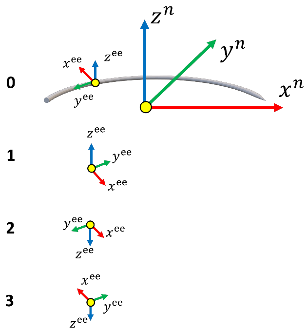
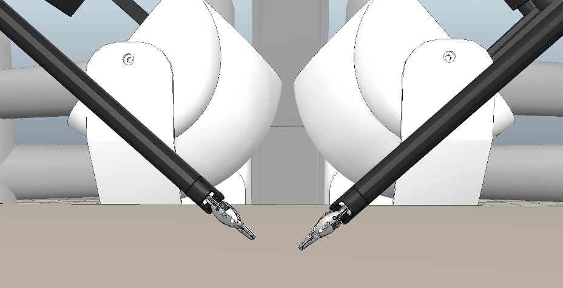
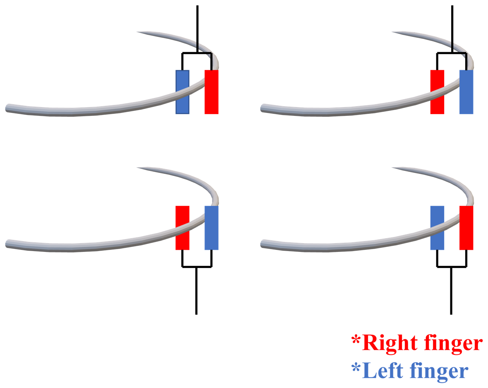
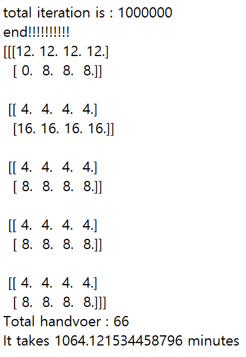
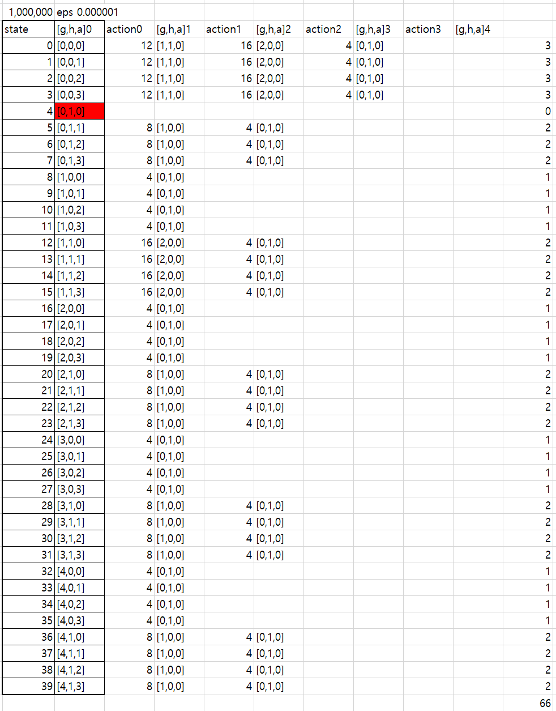

Suture needle 최적점 파지를 위한 GridWorld 모델링과 Q-learning¶
이번 주에는 needle handover를 최적화하는 데 강화학습을 활용한 방법을 다룹니다.
강화학습 모델을 잘 만들려면 state, action, reward를 어떻게 설계하느냐가 관건이었습니다. 제가 풀고자 한 문제는 '임의의 자세로 놓인 바늘을 최소한의 handover만 거쳐 최적의 자세로 파지한다'는 것이었는데, 다소 추상적으로 보이는 이 문제를 어떻게 모델링할지 꽤 오래 고민했습니다.
실마리는 강화학습 입문서인 『바닥부터 배우는 강화 학습』(노승은, 영진닷컴)에서 얻었습니다. 책에서 Q-learning을 설명하면서 Grid world를 예제로 들었습니다. (제가 학위 과정을 밟던 때는 지금처럼 LLM이 발달하지 않아서, 필요한 내용은 책이나 논문에서 직접 찾아 공부하고 코드도 손으로 하나하나 짜야 했습니다.) 고민하면서 책을 여러번 보던 중 양팔 로봇이 바늘을 주고받는 과정도 3차원 Grid world로 해석할 수 있겠다는 생각이 떠올랐습니다.
2차원 Grid world에서 3차원 Grid world로¶


책의 Grid world 예제에서 에이전트는 격자의 한 칸에 서 있고, 상하좌우 가운데 하나를 골라 한 칸씩 움직입니다. 벽이나 격자 밖으로 가려 하면 제자리에 머물고 reward가 깎입니다. 에이전트는 이런 경험을 반복하면서 목표 칸까지 가장 빨리 가는 경로를 배웁니다.
저는 needle handover 문제를 3차원 격자로 옮겼습니다. 격자의 점 하나는 state이고, "어느 팔이(H) 바늘의 어느 지점을(G) 어떤 각도로(A)" 잡고 있는지 나타냅니다. action은 바늘을 넘긴 뒤의 파지 state, 즉 다음에 도착할 점을 고르는 것입니다. 그래서 Grid world처럼 한 칸씩 움직이는 대신, 로봇 팔이 닿기만 하면 바늘을 한 번 넘겨서 격자의 어느 점으로든 이동할 수 있습니다. 목표 파지로 바로 점프하는 것도 가능합니다.
벽에 해당하는 것은 도달할 수 없는 파지입니다. 지금 잡고 있는 지점을 반대쪽 팔이 또 잡으려 하거나, 바늘을 잡고 있는 팔에게 넘기려 하거나, 역기구학(IK)이 풀리지 않아 팔이 닿지 않는 경우입니다. 이런 action을 고르면 Grid world에서 벽에 부딪혔을 때처럼 제자리에 머물고 감점됩니다. 결국 에이전트가 배우는 것은 바늘을 가장 적게 넘기면서 목표 파지에 도달하는 경로입니다.
| 2차원 Grid world | 3차원 Grid world (needle handover) | |
|---|---|---|
| state | 격자 위의 칸 (x, y) | 파지 state (G, H, A) |
| action | 상하좌우, 바로 옆 칸으로 이동 | 다음 파지 state와 handover orientation, 도달 가능한 어느 점으로든 이동 |
| 갈 수 없는 곳 | 벽, 격자 밖 | 같은 지점, 같은 팔, IK 실패 |
| 갈 수 없는 곳을 고르면 | 제자리, 감점 | 제자리, 감점 |
| 목표 | goal 칸 도착 | 목표 파지 state 도착 |
STATE 정의하기¶
위에서 간략하게 설명했던 state에 대해 자세히 설명해보겠습니다. 파지 state는 G–H–A, 세 가지의 조합으로 나타냈습니다.
- G · 파지 지점 — 그리퍼가 바늘의 어느 지점을 잡았는지. 최종 모델은 반지름 20 mm 호 위, 30° 간격 다섯 곳 (G0–G4)입니다. 처음에는 호를 따라 10° 간격으로 19곳을 뒀습니다. 하지만 지점이 너무 가까우면 바늘을 넘길 때 양쪽 그리퍼 끝이 부딪히기 쉽고(바늘은 생각보다 매우 작은데, 로봇 그리퍼는 작게 만들기 어렵습니다), 학습 시간만 길어져서 다섯 곳으로 줄였습니다.
- H · 파지 팔 — 바늘을 잡고 있는 팔. 왼팔 0, 오른팔 1입니다.
- A · 파지 각도 — 그리퍼가 바늘을 무는 각도. 네 가지로 제한했습니다. 이유는 아래 그림 다음에 설명합니다.




봉합 바늘은 그리퍼로 잡는 부분을 납작하게 깎아 둡니다(D컷). 비스듬히 물면 바늘이 흔들리기 때문에, 그리퍼가 항상 바늘 평면에 수직이라고 가정하고 파지 방향을 네 가지로 제한했습니다.
처음에는 가능한 state가 19 × 2 × 4 = 152개였습니다. 파지 지점을 다섯 곳으로 줄인 뒤에는 5 × 2 × 4 = 40개가 됐습니다. 파지 지점, 팔, 각도를 각각 축으로 놓으면 아래처럼 3차원 격자가 됩니다.

Action 정의하기¶
action은 바늘을 넘긴 뒤의 파지 state를 고르는 것으로 정의했습니다. action 하나에는 네 가지가 들어 있습니다.
- 바늘을 넘겨받을 팔 (H′)
- 그 팔이 잡을 바늘의 파지 지점 (G′)
- 그 지점을 무는 파지 각도 (A′)
- 바늘을 넘기는 순간 바늘이 향하는 방향 (handover orientation)
(G′, H′, A′)를 고르면 H′에 해당하는 팔이 G′ 지점을 A′ 각도로 잡고, 원래 잡고 있던 팔은 바늘을 놓습니다.
def decode(action): # action은 1..152
idx = action - 1
g = idx // 8 # 파지 지점 0..18
h = (idx // 4) % 2 # 팔: 0 = 왼팔, 1 = 오른팔
a = idx % 4 # 파지 각도 0..3
return g, h, a
handover orientation은 카메라 영상에서 바늘을 찾기 쉽도록 바늘 면이 카메라를 정면으로 향하게 했습니다. 이 조건에서 쓴 방향은 네 가지입니다. 바늘을 그대로 두거나 x·y·z축 가운데 하나를 기준으로 180° 돌렸습니다. 더 다양한 handover orientation을 가지고 시험도 해 봤지만, 목표에 도달하는 데 필요한 최소 전달 횟수는 같았습니다. 그래서 현실 공간에서 needle pose estimation에 용이한 네 가지 경우만 남겼습니다.


파지 지점 5곳, 팔 2개, 파지 각도 4가지, 바늘 방향 4가지를 조합하면 action은 160개입니다.
도달할 수 없는 action¶
앞에서 말한 벽, 즉 도달할 수 없는 action은 세 가지입니다.
- 같은 지점: 지금 잡고 있는 바늘 지점을 반대쪽 팔이 또 잡으려는 경우. 그리퍼 두 개가 한 지점을 동시에 물 수는 없습니다.
- 같은 팔: 지금 바늘을 잡고 있는 팔에게 넘기려는 경우. 자기 자신에게는 바늘을 넘길 수 없습니다.
- IK 실패: 그 지점과 각도, handover orientation로는 로봇 팔이 닿지 않는 경우. 역기구학(IK)이 풀리지 않거나 관절 가동 범위를 벗어납니다.
세 경우 모두 Grid world에서 벽에 부딪힌 것처럼 파지 state는 그대로 두고 reward를 깎습니다.
Grid world의 벽은 맵에 고정돼 있지만, 여기서는 바늘이 놓인 위치와 자세, handover orientation에 따라 로봇 팔이 닿는 파지가 매번 달라집니다. 벽을 미리 그려 둘 수 없으니, action을 고를 때마다 역기구학으로 도달 가능한지 계산해야 합니다. 이 내용은 아래 IK 단락에서 다룹니다.
Reward 정의하기¶
reward는 바늘을 가장 적게 넘기고 목표 파지에 도달하는 경로가 가장 큰 reward를 받도록 설계했습니다.
- 바늘을 한 번 넘길 때마다 −1 reward를 최대로 만드는 정책이 곧 handover 횟수가 가장 적은 정책이 됩니다.
- 목표 파지 state에 도달하면 +10
- 같은 지점을 다시 잡거나 같은 팔에게 넘기면 −10, 제자리 IK를 풀어 볼 필요도 없이 애초에 말이 안 되는 수입니다. 이런 터무니없는 수는 에이전트가 고려할 필요조차 없기 때문에, 학습 초기 단계부터 아예 배제되도록 실제 handover 비용(−1)보다 훨씬 크게 감점했습니다.
- IK가 풀리지 않는 파지를 고르면 −1, 제자리 로봇 팔이 닿지 않아 바늘을 넘길 수 없는 경우입니다.
관절이 가동 한계에서 멀수록 보너스를 주거나 두 팔이 엇갈릴 때 감점하는 항목도 나중에 추가했습니다. 자세한 내용은 추후에 다룹니다.
IK로 도달 가능한 파지 걸러 내기¶
바늘이 어디에 놓였는지에 따라 어떤 지점은 작업 공간 밖에 있고, 어떤 지점은 관절 한계를 넘을 만큼 손목을 꺾어야 잡을 수 있습니다. 그래서 파지 후보마다 역기구학(IK)을 풀어, 실제로 잡을 수 있는 파지만 남기는 필터를 만들었습니다. 앞에서 말한 "벽"을 매번 계산하는 부분이 바로 이것입니다.
파지 후보의 좌표계 계산¶
바늘은 테이블 위 0.7 × 0.5 m 영역 안의 무작위 위치에 평평하게 놓았습니다. 파지 후보 하나는 바늘 호 위의 한 점과 그 점에 붙은 그리퍼 좌표계입니다. 이 좌표계를 각 팔의 base 좌표계로 옮기는 변환은 다음과 같습니다.
- \(T^{\text{table}}_{\text{needle}}\) — 무작위로 뽑은 바늘 자세
- \(T^{\text{needle}}_{\text{grasp}}(g, a)\) — 바늘 좌표계에서 본 파지 좌표계 바늘 z축을 기준으로 파지 지점 \(g\)까지 돌리고, 반지름만큼 이동한 다음, 파지 각도 \(a\)를 적용합니다.
- \(T^{\text{PSM}_k}_{\text{table}}\) — 테이블에서 팔 \(k\)까지의 고정 변환 CoppeliaSim 장면에서 읽어 왔습니다.
IK와 관절 가동 범위 검사¶
파지 좌표계마다 dVRK의 해석적 IK를 풀고, 관절이 하나라도 가동 범위를 벗어나면 그 파지는 버렸습니다.
| 관절 | 가동 범위 |
|---|---|
| J1 (outer yaw) | ±60° |
| J2 (outer pitch) | ±45° |
| J3 (삽입, 직동) | 0.05 – 0.18 m |
| J4 (roll) | ±180° |
| J5 (wrist pitch) | ±90° |
| J6 (wrist yaw) | ±90° |
학습 루프 안에서의 흐름¶
IK 검사를 넣은 뒤 한 에피소드는 이렇게 진행됩니다.
- 바늘을 무작위 자세로 놓습니다.
- IK로 잡을 수 있는 (지점, 팔, 각도) state를 찾습니다.
- 그중 하나를 잡습니다.
- action을 고릅니다. 다음 파지 state와 handover orientation이 정해집니다.
- IK로 그 파지에 닿을 수 있는지 확인하고, 닿으면 바늘을 넘깁니다. 닿지 않으면 제자리에 머물고 reward를 깎습니다.
- 목표 state면 끝내고, 아니면 4번으로 돌아갑니다.
모든 파지가 불가능하다고 나오던 버그
첫 버전은 파지 각도를 넣자마자 모든 파지를 도달 불가능하다고 판정했습니다. 원인은 두 가지였습니다. 변환 두 개를 곱하는 순서가 틀려서 IK에 넣기도 전에 파지 좌표계가 엉뚱한 곳에 가 있었고, 파지 지점을 도는 루프에서 각도를 줄이는 위치가 잘못돼 좌표계가 바늘 호를 벗어났습니다. 둘을 고치고 나서야 도달 가능한 파지가 제대로 나왔습니다.
남은 문제¶
IK 검사로 로봇이 실제로 닿는 범위를 학습에 반영할 수 있었지만, 두 가지 문제가 남았습니다.
- 학습 시간이 길어졌습니다. step마다 파지 후보 40개(지점 5 × 팔 2 × 각도 4)에 대해 IK를 풀어야 해서, step 하나에 4 ms쯤 걸렸습니다. 이 비용을 줄인 과정은 추후에 다룹니다.
- state에 바늘의 처음 자세가 없습니다. 에이전트는 다음에 어디를 잡을지는 배우지만 바늘 자세 자체는 보지 못합니다. 그래서 바늘이 어떻게 놓였을 때 어떤 파지로 시작해야 하는지는 배울 수 없었습니다. 이 한계를 보완한 방법도 추후에 다룹니다.
Q-learning¶
state가 수십 개, action이 수백 개라 state와 action의 조합마다 Q값을 표에 저장할 수 있었습니다. Q값은 다음 식으로 갱신합니다.
discount factor는 γ = 1로 뒀습니다. 목표에 도달하면 에피소드가 끝나므로 값이 발산하지 않습니다. discount factor가 없으면 바로 다음 handover든 몇 단계 뒤의 handover든 똑같이 −1로 계산되고, 어떤 state의 가치는 '목표까지 남은 handover 횟수 × (−1)'이 됩니다.
Q-learning 코드는『바닥부터 배우는 강화 학습』의 Grid world Q-learning 예제 코드를 기반으로, state와 action, reward만 이 과제에 맞게 바꿨습니다.
import numpy as np, random
class QAgent:
def __init__(self, n_g=19, n_h=2, n_a=4, n_actions=152):
self.q = np.zeros((n_g, n_h, n_a, n_actions))
self.eps, self.alpha, self.gamma = 0.9, 0.1, 1.0
def select_action(self, s): # epsilon-greedy
if random.random() < self.eps:
return random.randint(1, self.q.shape[-1])
return int(np.argmax(self.q[s])) + 1 # action은 1부터 시작
def update(self, s, a, r, s_next):
a -= 1
target = r + self.gamma * np.max(self.q[s_next])
self.q[s][a] += self.alpha * (target - self.q[s][a])
def anneal_eps(self, step=0.03, floor=0.1):
self.eps = max(self.eps - step, floor)
def train(env, agent, episodes=50_000):
for _ in range(episodes):
s, done = env.reset(), False
while not done:
a = agent.select_action(s)
s_next, r, done = env.step(a)
agent.update(s, a, r, s_next)
s = s_next
agent.anneal_eps()
예전 코드를 다시 보니
발표 자료에서는 Q값이 가장 높은 action을 고를 때 np.argmax(...)의 결과를 그대로 반환했습니다. argmax는 0부터 세는데, 환경과 무작위 선택 코드는 action 번호를 1부터 매겼습니다. 그 결과 Q값을 보고 고른 action 번호가 하나씩 밀렸습니다. 위 코드에서는 + 1로 번호를 맞췄습니다.
| 하이퍼파라미터 | 2022.09 (첫 학습) | 최종 표 기반 모델 |
|---|---|---|
| α (학습률) | 0.1 | 0.1 |
| γ (discount factor) | 1 | 1 |
| ε 시작 → 하한 | 0.9 → 0.1 | 0.9 → 0.1 |
| ε 감소 | 에피소드마다 −0.03 | 에피소드마다 −1×10⁻⁶ |
| 에피소드 | 50,000 (설정값) | 1,000,000 |
첫 학습 결과¶
첫 실험에서는 매번 왼팔로 0번 지점을 0번 각도로 잡은 state에서 시작했습니다. 목표도 오른팔로 3번 지점을 0번 각도로 잡는 state 하나로 고정했습니다. 3만 에피소드를 돌리는 데 약 10분이 걸렸고, 에이전트는 바늘을 한 번 넘겨 목표에 도달하는 법을 배웠습니다.
이 실험으로 학습 코드가 돌아가는 건 확인했습니다. 실제 로봇에 적용하려면 두 가지를 더 해결해야 했습니다.
- 시작 자세를 하나로 고정했습니다. 실제로는 바늘이 놓인 위치와 방향에 따라 각 팔이 닿을 수 있는 지점이 달라지고, 첫 파지도 달라집니다.
- 바늘을 넘길 수 있는 자세인지 검사하지 않았습니다. 원하는 지점에 원하는 각도로 닿으려면 관절이 가동 범위를 벗어나야 하는 경우도 있습니다. 그런 계획은 로봇에서 실행할 수 없습니다.
두 문제를 해결하려고 학습 환경에 로봇의 기구학적 제약을 넣었습니다. 바늘이 처음 놓일 때와 넘길 때마다 파지 후보별로 역기구학(IK)을 풀어, 로봇 팔이 실제로 닿을 수 있는 자세만 허용했습니다. 바로 다음 단락에서 설명합니다.
100만 에피소드 학습 결과¶
10월에는 state 40개와 action 160개로 구성한 모델에 역기구학 검사를 넣고, 무작위로 action을 고를 확률 ε도 훨씬 천천히 줄였습니다. Q-learning은 100만 에피소드 만에 수렴했습니다. 가능한 시작 state 40개에서 각각 목표까지 바늘을 몇 번 넘기는지 세어 보니, 총 66번이었습니다.


추후에 ε를 얼마나 빠르게 줄일지 조정하고, 17시간 넘게 걸리던 학습 시간을 줄인 과정을 다룹니다.
이전 글: ← 1. 개요 · 다음 글: 3. Q-learning 수렴 분석 →